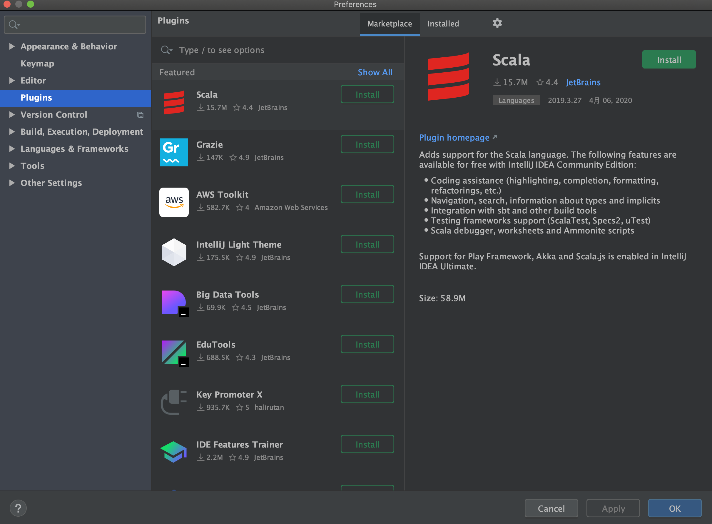
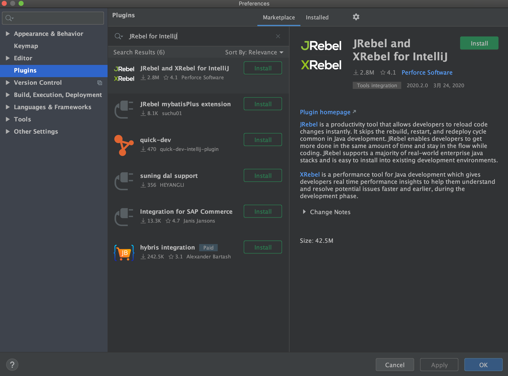
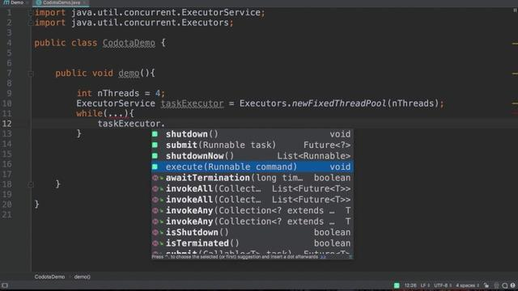
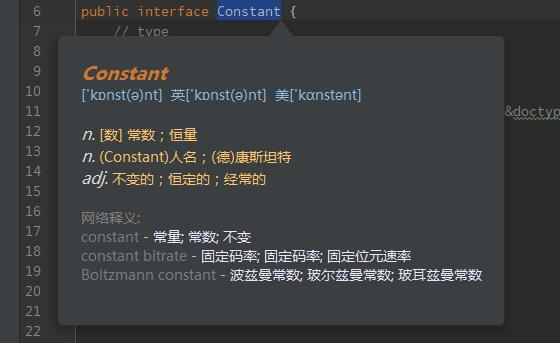
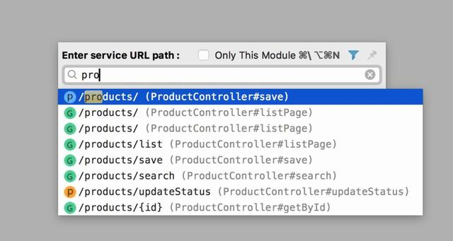
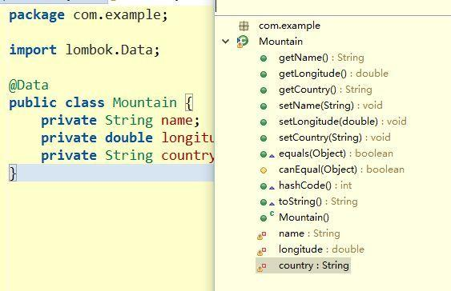
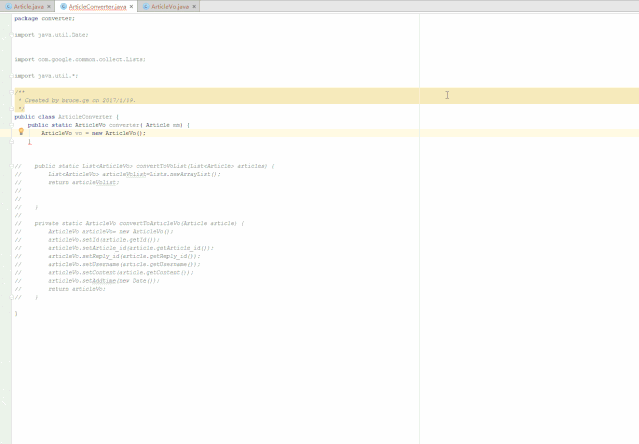

这些 idea 插件让开发效率提高N倍
前言
idea 有很多非常好用的插件，用好了这些插件能够极大的提高开发效率
IDEA 插件如何安装
- 
- 打开 idea 的设置页面，选择 Plugins 选项即可搜索和安装插件
插件推荐
1. JRebel for IntelliJ

日常开发中，当你修改任意一个 java 文件时，tomcat 并不能将此文件的修改实时编译并反映到运行的项目中去，所以只能重启项目。这样做非常耗时和麻烦。使用 JRebel 之后只要选择 Bulid 中的 Build Project 选项即可热部署项目，用着非常爽，强烈推荐。
具体安装和使用参考之前的文章: idea 热部署插件 jrebel，开发必备
2.Codota
Codota 是一款智能 AI 代码补全插件，它从数百万 Java 程序中学习代码，最终能根据程序上下文提示并补全代码，帮助开发者减少失误，提升工作效率，并且它还是免费的。
- 
3. Translation
翻译插件，有了它妈妈再也不用担心我的英语渣了

常用的两个功能
- 翻译, 就是中英翻译, 可以当词典用
- 翻译替换, 就是将原文直接翻译替换, 起变量名字时非常有用: 起个中文名, 然后翻译替换就好了.
4. RestfulToolkit
这款插件可以根据 URL 直接跳转到对应的方法。

快捷键
- windows：ctrl + \
- mac：cmd + \
5. Lombok
- 在过往的 Java 项目中，充斥着太多不友好的代码：POJO 的 getter/setter/toString；异常处理；I/O 流的关闭操作等等，这些样板代码既没有技术含量，又影响着代码的美观，Lombok 应运而生。它让代码变得非常简洁。
- 这个插件也充斥着先多的争议，有人认为该写的getter/setter还是生成到代码中的好，有人认为这样代码整洁，依个人观点使用

6.GenerateAllSetter
一键调用一个对象的所有 set 方法并且赋予默认值 在对象字段多的时候非常方便

7. Alibaba Cloud Toolkit
Cloud Toolkit 帮助开发者将本地应用程序一键部署到线下自有 VM，或阿里云 ECS、EDAS 和 Kubernetes 中去。内置终端 Terminal、文件上传、数据库 SQL Console 能功能。用它来部署项目非常方便。
8. Properties to YAML Converter
将 Properties 配置文件转换为 YAML 配置文件
- 首先选择属性文件。
- 在属性文件上单击鼠标右键后，在菜单中使用“转换”操作。
9.Free MyBatis plugin
free-idea-mybatis是一款增强idea对mybatis支持的插件，主要功能如下：
- 生成mapper xml文件
- 快速从代码跳转到mapper及从mapper返回代码
- mybatis自动补全及语法错误提示
- 集成mybatis generator gui界面